Osteria_Dinamica
Paris 6e
3 — Logotype
Osteria_Dinamica — Paris 6e
00/09
[Art direction]
Fabrizio Verrecchia
Abysse Lab
Art direction Fabrizio Verrecchia × Abysse Lab Paris
Romolo & Remo puise son identité dans le récit fondateur de Rome, non pour en proposer une relecture historique, mais pour en extraire les valeurs qui traversent les siècles : la fraternité, le courage, la transmission et le sens de l’accueil.
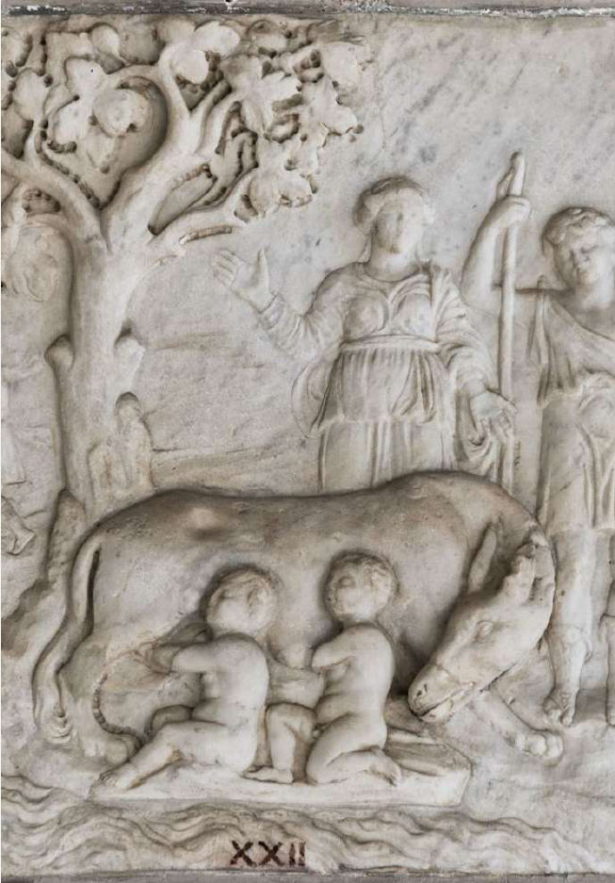
Deux noms, deux présences, deux entrées, mais une seule histoire.
Un restaurant italien contemporain à forte dimension sociale : déjeuner, aperitivo, dîner, bar, puis seconde partie de soirée.
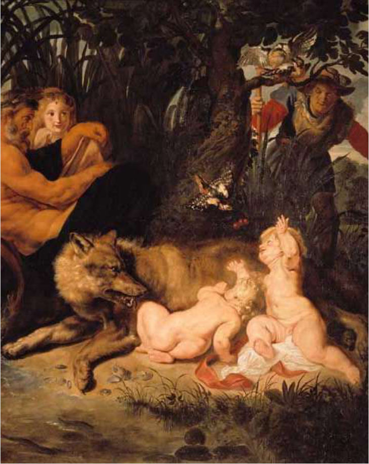
Hier — une scène d’allaitement, littérale et touristique.
Demain — deux personnages en mouvement, porteurs d’un nouveau récit.
La louve devient un symbole de protection et de transmission. Les enfants ne sont plus des nourrissons dépendants : l’un évoque la tradition, l’autre une génération contemporaine.
3 ADN
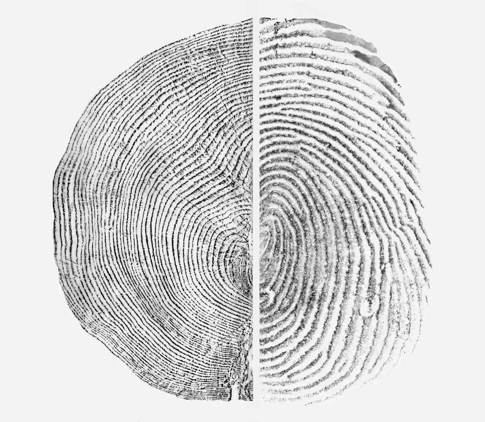
4 Un lieu traversant
Romolo12 rue Dauphine
Osteria — entrée visible, urbaine
Remo9 rue de Nevers
Cocktail bar — entrée confidentielle
Deux rues, deux entrées, plusieurs ambiances — une destination.
La palette s’inspire des matières et des lumières de Rome : le travertin, la terre cuite, les pigments minéraux, le bronze patiné et les tons profonds des anciennes enseignes italiennes.
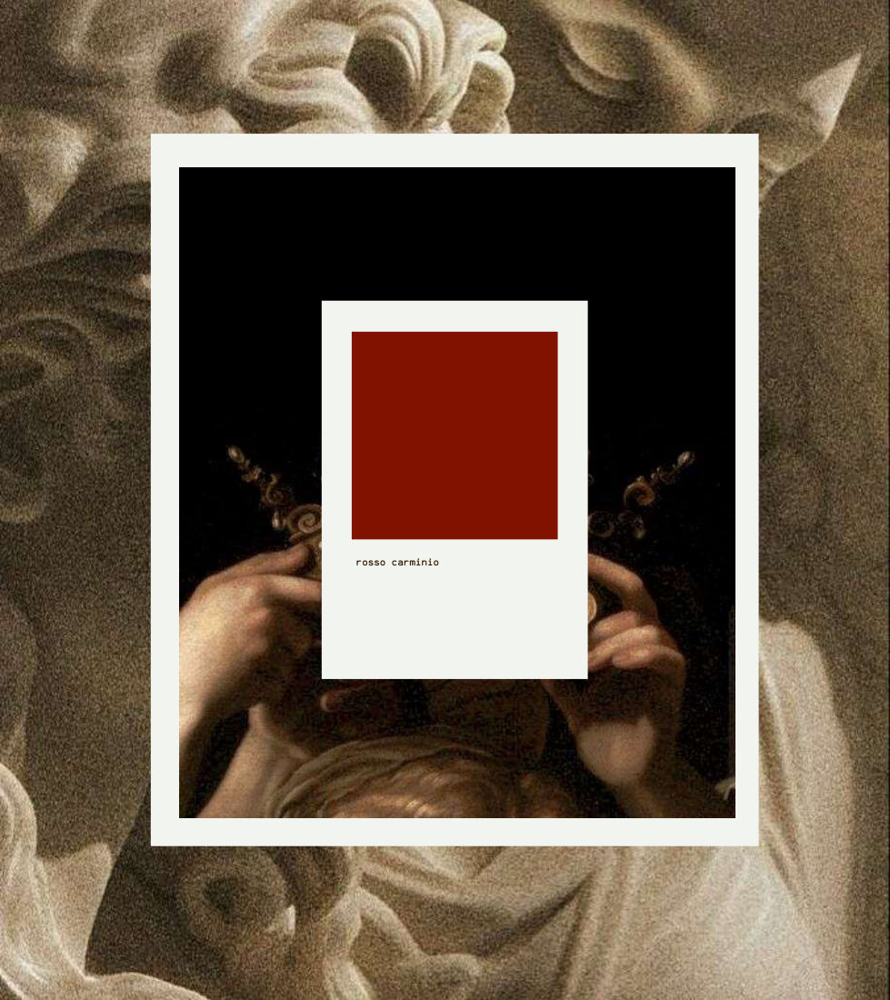
Osteria_Dinamica
Paris 6e
3 — Logotype
3.1 — Logo symbol
3.2 — Monogramme
3.2 — La clé, signature
Au sommet, l’étendard devient l’emblème de la maison : les deux R s’articulent autour d’une clé centrale — l’ouverture, le partage, deux portes menant à une seule et même expérience.
Romolo
12 rue Dauphine
Remo
9 rue de Nevers — Cocktail_bar
8 Art direction
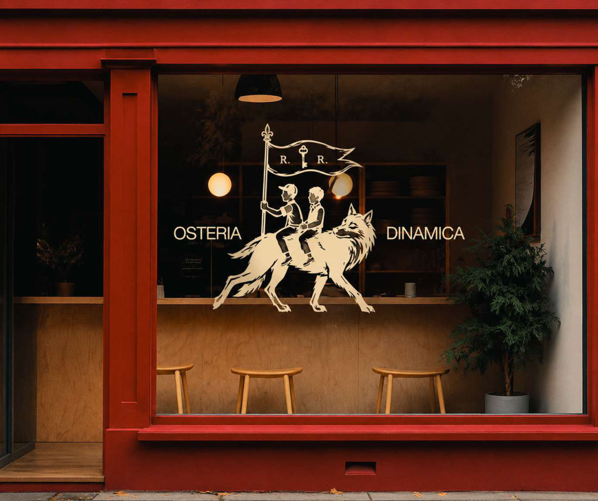
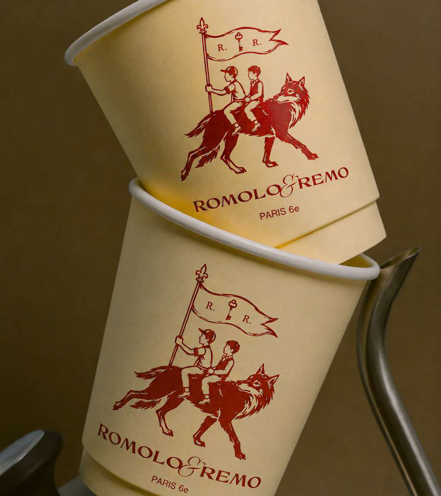
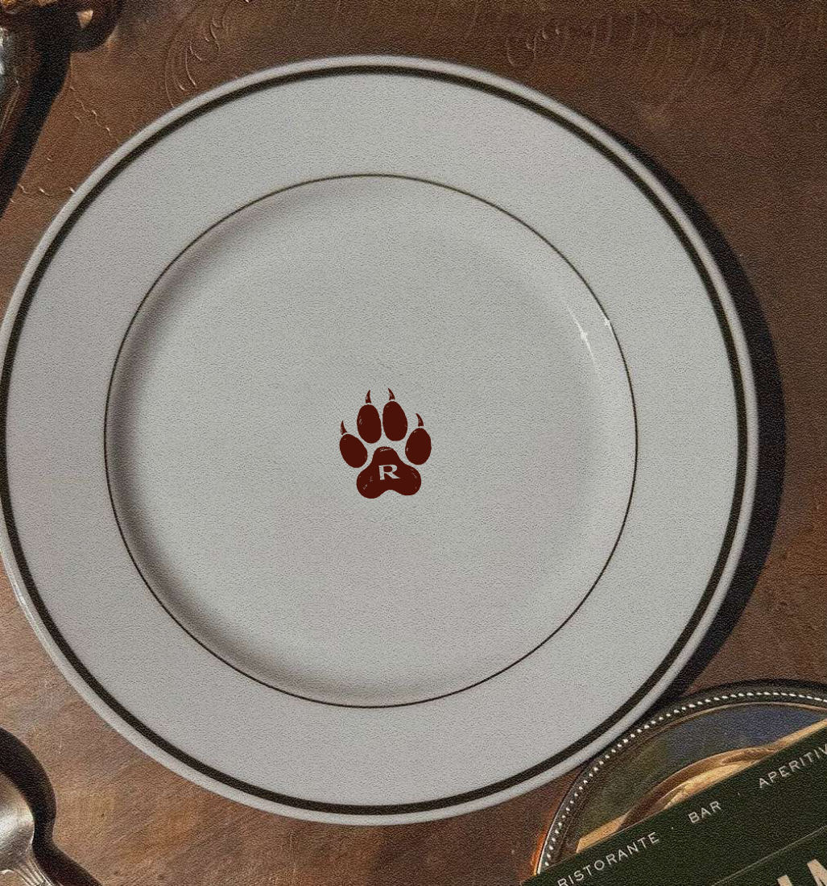
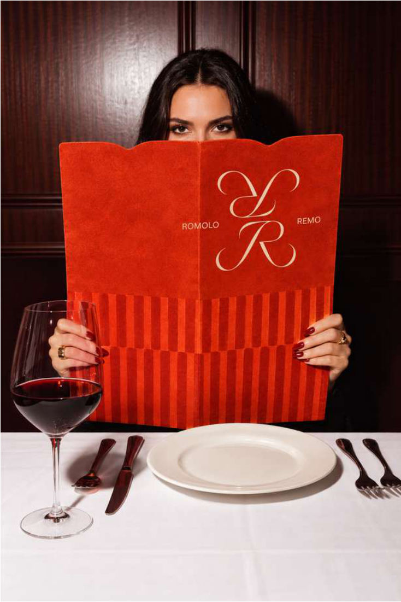
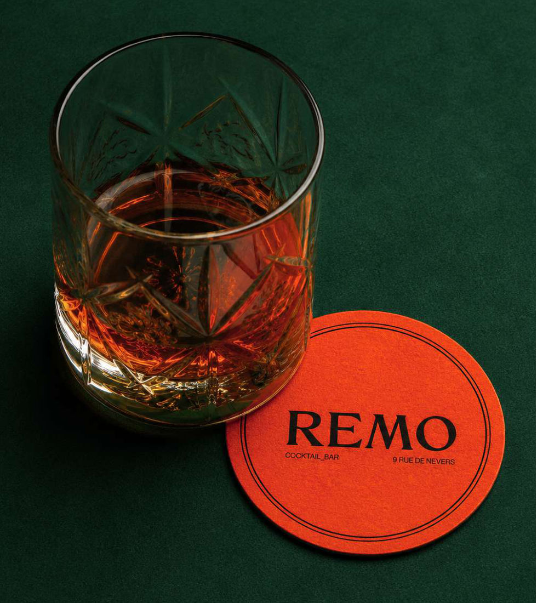
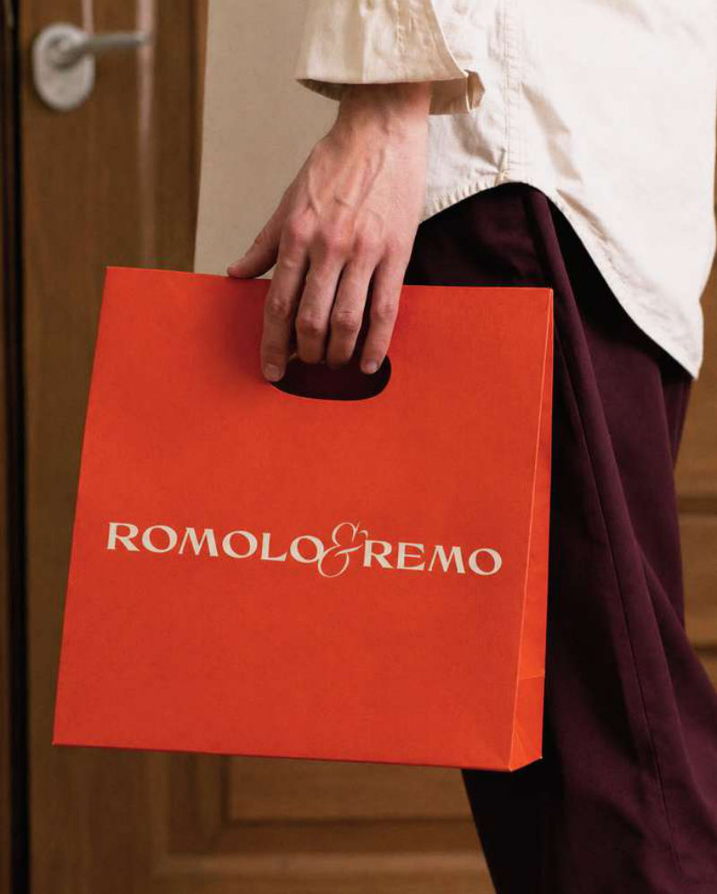
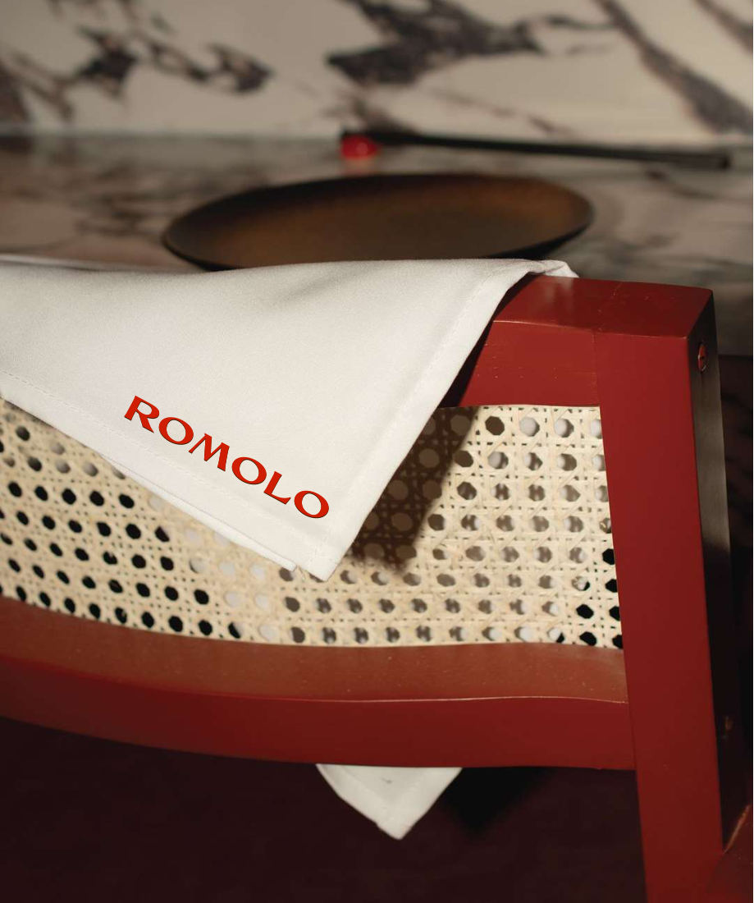
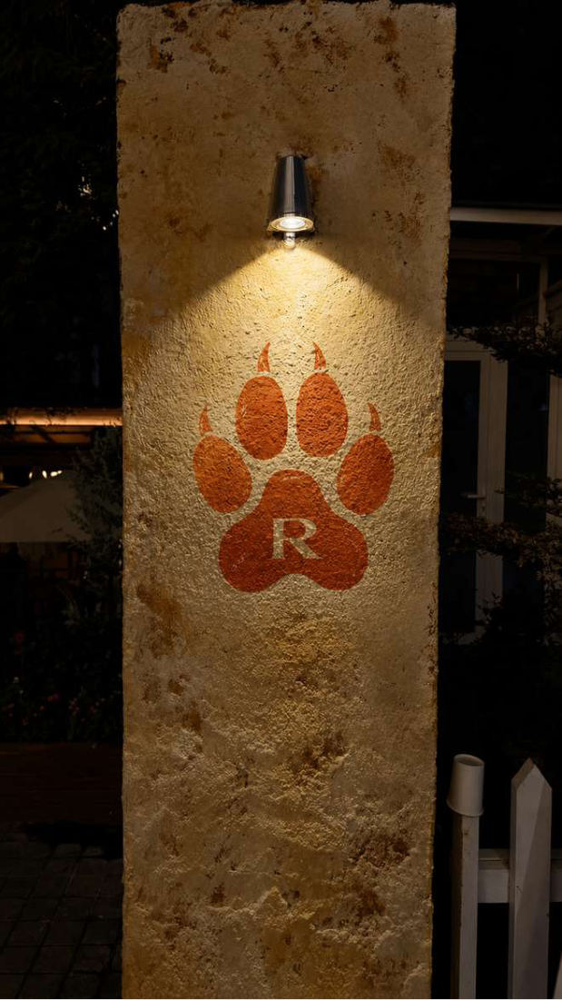
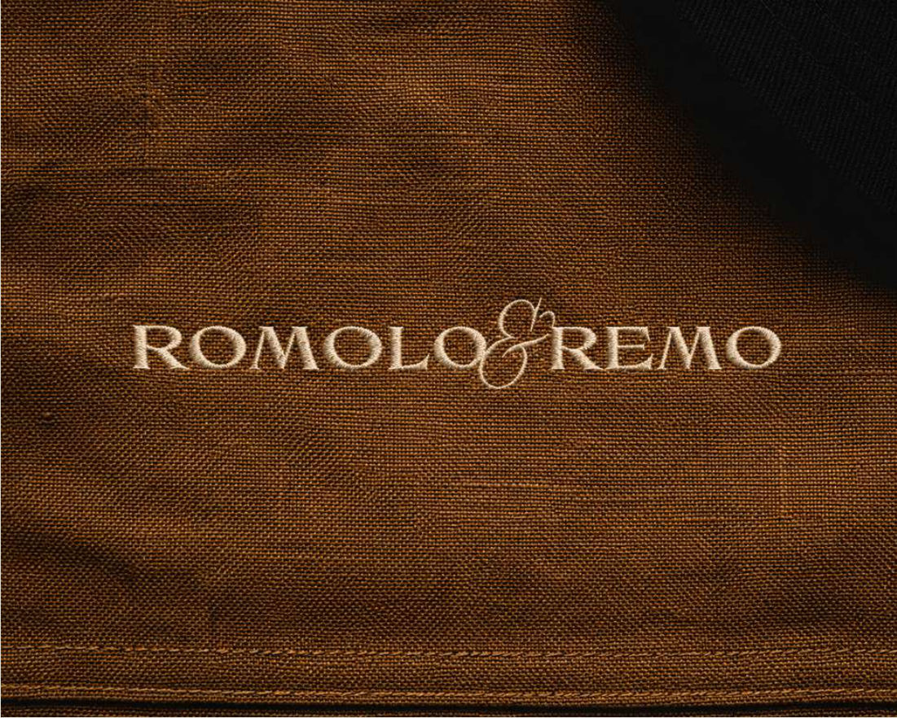
Le dessin emprunte le langage des gravures italiennes et des emblèmes anciens. Les traits restent expressifs, les imperfections volontaires — une identité intemporelle plutôt qu’une simple illustration.
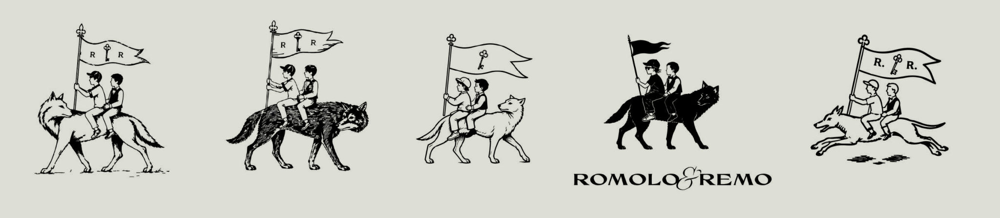
Variantes secondaires, brouillons